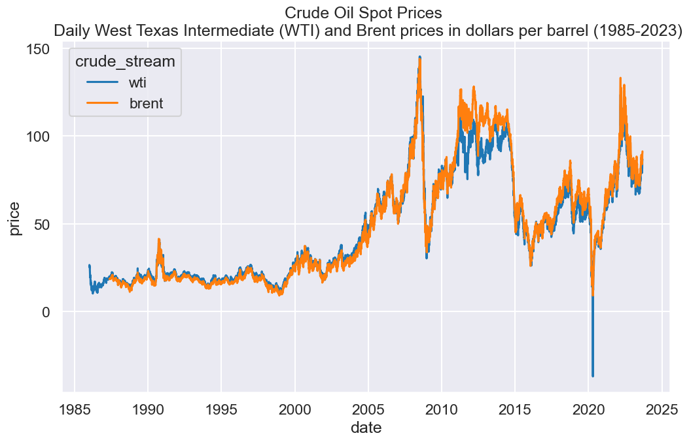

# Use Seaborn themes and gridssns.set_style("darkgrid")sns.set_context("talk")# Set figure sizeplt.figure(figsize=(12,7))# Set y-ticks for every 50 unitsplt.yticks([0, 50, 100, 150])sns.lineplot(data=price_data, x='date', y='price', hue='crude_stream')plt.title('Crude Oil Spot Prices \n Daily West Texas Intermediate (WTI) and Brent prices in dollars per barrel (1985-2023)')plt.show()

Final Crude Oil Spot Prices Graph
Code
# Clean NA data pointsprice_data = price_data.dropna(subset=['price'])
Code
# Use whitegrid themesns.set_style("white")# Colour paletteviridis = plt.cm.get_cmap('viridis', 256)aqua = viridis(0.60)black = viridis(0.00)custom_palette = [black, aqua]# Set figure sizeplt.figure(figsize=(14,10))# Line Plot Configsns.lineplot( data=price_data, x='date', y='price', hue='crude_stream', hue_order=['brent', 'wti'], palette=custom_palette)# x-Axis constraintsplt.gca().set_xlim([datetime(2013, 1, 1), datetime(2023, 12, 31)])# y-Axis constraintsplt.yticks([0, 50, 100, 150])# Title Stylingplt.title("Crude Oil Spot Prices", loc='left', fontsize=20, weight='bold', pad=20)plt.text( s='Daily West Texas Intermediate (WTI) and Brent prices in dollars per barrel (2013-2023)', x=0, y=1.00, fontsize=15, ha='left', transform=plt.gca().transAxes)# Axis Labelsplt.ylabel('Price ($/bbl)')plt.xlabel('')# Legend Stlyinglegend = plt.legend(loc='upper center', bbox_to_anchor=(0.5, -0.15), ncol=2)# Modify the legend labelslabels = ['Brent', 'WTI']for t, label inzip(legend.texts, labels): t.set_text(label)# Despine for cleaner looksns.despine(left=True, bottom=True)plt.tight_layout()# Source & Nameplt.text( x=1, y=-0.2, s='Data via EIA, graph by Oscar Jaimes', transform=plt.gca().transAxes, ha='right', va='bottom', fontsize=15)plt.show()